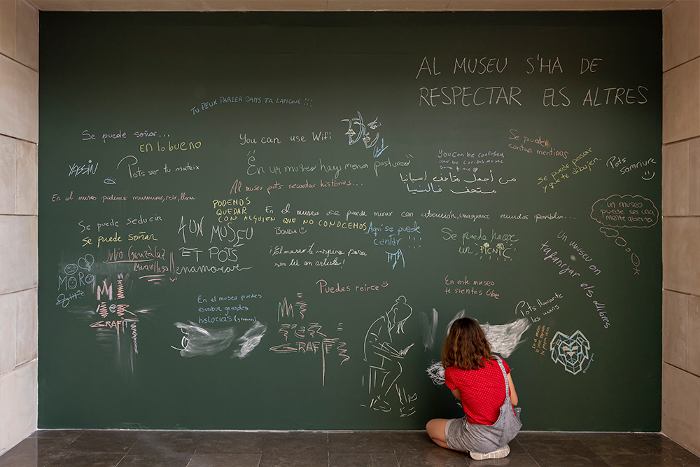
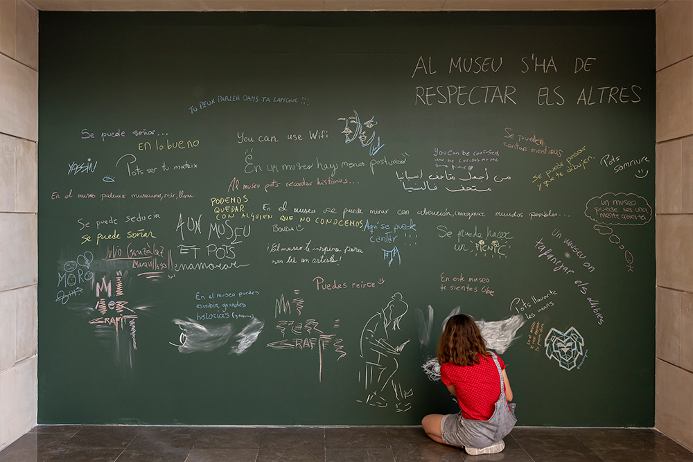

Este es un podcast de Imaginar Nuevas Europas. Una iniciativa que da cuenta de la colaboración entre diversas comunidades e instituciones para generar otras formas de vida en común en el contexto cultural español.
Tramando juntas la Europa del futuro.
Poliglotía.
Institut Valencià d'Art Modern (IVAM)
València.
Una escuela de saberes diversos es un caleidoscopio de personas que fluyen y se mezclan para aprenderse.
Una escuela de saberes diversos es un espacio de intercambios, descubrimientos, costumbres, idiomas, historias y vivencias.
Escuela de saberes diversos es un lugar, refugio, donde se encuentran historias del pasado y del presente, diferentes puntos de vista que se conectan entre ellos.
Hola, soy Caro.
Hola a todos, mi nombre es Nancy Carrillo
Bueno, yo soy Empar, Empar Mestre.
Hola, mi nombre es Yondri.
Hola, soy Soledad.
Bueno, mi nombre es Isabel.
Hola, yo soy Neus.
Hola, soy Mariana.
Hola, soy Saba.
Hola, soy Sebastián.
Soy Vake.
Me llamo Gudrita.
Mi nombre es Nicolás.
Hola, soy Katalay.
Yo soy Francesco.
Soy Noemi.
Lo que ofrezco para que mis compañeros y compañeras de la Escuela de Saberes aprendan es el acercamiento a la radio.
Quiero ofrecerle al grupo la posibilidad de hacer teatro, pero eso es muy complicado, entonces, acercarnos a lo que es la práctica teatral.
Enseñar a cocinar una fideuà, como si hace falta venir a casa un día.
Me gustaría aprender lenguaje de señas, tengo rato persiguiendo a quien me enseñe sobre eso.
Y creo que soy buena estableciendo relaciones entre prácticas diversas, bien ideas, bien procesos creativos o bien relacionar una conducta personal con una obra artística.
Yo puedo enseñar a leer en público.
Lo que siento que puedo enseñar es a estirar del hilo.
Quisiera aprender cualquier cosa, todo, si me lo enseñan con ilusión.
Lo que me gustaría aprender, pues, al final, un poco de cada persona y de la visión del mundo.
Me gustaría aprender a bordar.
Quería aprender cómo gestionar una vida independiente.
Quiero aprender fotografía de comida.
Lo que puedo llegar a ofrecer es asociar ideas y conectar experiencias.
Me gustaría aprender a hablar en público y a ser un mediador entre la cultura africana y europea.
Me encantaría aprender a dibujar.
Me gustaría aprender a cuidar de las plantas.
Y enseñar… una herramienta que he podido mutar dentro de mi proceso de crecimiento y aprender a adaptarla, que es la improvisación. No solamente dentro del rap, sino en distintas escenas. Entonces, eso es lo que les ofrezco, aprender a improvisar.
Y lo que quiero aprender es cómo se presenta un proyecto.
Y yo siempre he querido aprender a cantar una canción.
Y en cuanto a lo que me interesa, lo que me gustaría aprender, pues me gustaría aprender cosas que en principio están como alejadas de mi mundo, que me crean curiosidad, que creo que no forman parte de mí pero que estoy abierta como por ejemplo a lo que me puede enseñar mi compañera que acaba de... Dime tu nombre, Yondri, el rap, me encantaría.
Y lo que quisiera aprender es a escribir y hacer teatro.
Yo sí que he pensado que puedo enseñar como, parece aburrido, pero es el derecho migratorio, que es lo que estudio.
Lo que quería aprender es el diálogo viral de hoy en todos los países que estamos aquí.
Pues yo puedo ofrecer herramientas de programas informáticos para maquetar fanzines.
Me gustaría enseñar a adaptar la vida para todo el mundo.
Lo que puedo ofrecer es un taller de biomateriales.
Me gustaría aprender diferentes formas de contar historias.
Me encantaría enseñar a jugar al baloncesto.
Y lo que puedo ofrecer son herramientas en la organización de eventos.
Lo que sí que me gustaría es aprender algún baile. Cualquiera, o sea, todos me valen. Aprender a bailar algo nuevo.
Y lo que me gustaría enseñar es a pronunciar trabalenguas africanos con el tono de africanos.
Poliglotía nace como una propuesta que me hace el IVAM para impulsar un programa que tuviera en cuenta aspectos relacionados con diversidad cultural, con migración.
Y la idea era un poco introducir en el ámbito del museo lo que yo experimentaba en un aula de clase de español.
Digamos también con esta intención de introducir en el ámbito del museo, del IVAM en este caso, otras formas de sentir, de hacer, de expresarse, de comunicar.
Poliglotía ha consistido, digamos que ha tenido dos patas, una ha sido una serie de actividades mensuales donde hemos realizado desde taller de caligrafía árabe, taller de arte Ebrú, un taller de gastronomía, de gramáticas gastronómicas con Oscar.
Y luego la otra pata ha sido la formación de dos grupos de trabajo que digamos que han tenido una actividad con más frecuencia en el museo. Estos dos grupos, el primero fue un grupo de estudios políglotas donde dinamizamos una actividad en el IVAM con las 12 lenguas que aportaban los participantes. Cómo desde el lenguaje y desde la diversidad lingüística se puede generar actividad para el museo, o sea la intención de este grupo de estudios políglota
Y la segunda ha sido Inventario, que también ha participado aquí el compañero Óscar, la idea del IVAM ahí con el grupo de trabajo era repensar la propia idea del museo y cómo abrirlo a nuevos públicos, que yo creo que es una temática que está muy presente en los museos, cómo acceder a otro tipo de público, cómo abrirlo no sólo a público espectador sino a público colaborador y a público que pueda de alguna manera aportar al propio museo.
En el museo está prohibido correr, tocar las obras, introducir un paraguas, a menos que esté lloviendo en el interior, entrar animales marinos, tratar mal a las personas, ser racista, ir en bicicleta.
En el museo está prohibido no respetar.
En el museo podemos bailar.
En el museu es pot fer pipí.
En el museo puedes hablar con un micrófono.
En el museo uno se puede quedar en blanco y no tener nada que decir.
En el museu pots caminar de puntetes.
Au musée on peut pas cracher sur quelqu'un
في المتحف لايجب أن يكون هناك ضوضاء
En el museu pots passar molta calor.
в музеї можна танцювати!
En el museu pots dir “hala” moltes vegades.
Creo que Poliglotía ha sido muy experimental y la oportunidad es enriquecernos mutuamente con lo que cada persona aporta y luego el reto es que es gente que no suele ser usual.
Creo que lo que le da validez al proyecto es que no son usuarios de estos espacios museísticos. Gente que no lo tiene dentro de su imaginario cultural y que el museo se ha tenido que adaptar a sus códigos y ellos a los códigos del museo. Y también al lenguaje y al discurso.
La intención tanto de Poliglotía como del grupo de trabajo de Inventario es introducir la cotidianidad en el museo y cómo convertirla en artefacto expositivo.
Bajo la idea de que cualquier objeto puede ser una obra de arte.
Metimos ahí un extintor, un palo de estos de senderismo y cómo eso se convierte en artefacto museístico era el juego.
Que el que entre en el museo sienta que puede proponer y pueda sentirse cómodo.
Que se mezclaran varios lenguajes, varios niveles de discurso, varios perfiles con toda la dificultad que esto conlleva, que tampoco estamos hablando de que esto ha sido fácil y fluido y precisamente por eso lo hemos propuesto, porque sabíamos que tenía un lado de experimentación.
Lo que decías tú, Paco, un papel activo muy grande. Los usuarios, los que llegamos allí de participantes no éramos solamente espectadores sino al contrario. Las ideas nacían de nosotros y de nuestra creatividad, digamos.
Uno de los canales de entrada, de conexión entre la ciudad y el museo son otras artes, esos oficios, esas formas de conocimiento marginales. No están tan hiperespecializadas como el conocimiento artístico, y sobre todo en un museo de arte contemporáneo.
Que quien entre en el IVAM puede ser un potencial colaborador.
Se la fatiga l'è piò dal gòst, mola la figa e datt al Lambròsc!
Domani mi alzo, mi lavo, prendo l'asino e vado a Prato.
Tengo malparidez cósmica.
Se te escapó la tortuga.
Se subió la gata en la batea.
Barriga llena, corazón contento.
چند پیرهن بیشتر از تو پاره کرده
De la abundancia del corazón, habla la lengua.
Com cagalló per sèquia
Barriga llena, corazón contento.
Aguanta las carnitas.
Imaginar nuevas Europas es una iniciativa impulsada por la Presidencia española del Consejo de la Unión Europea.


 
